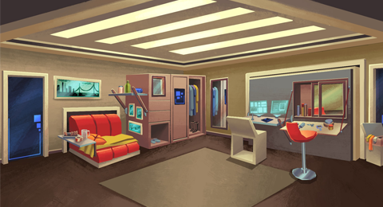
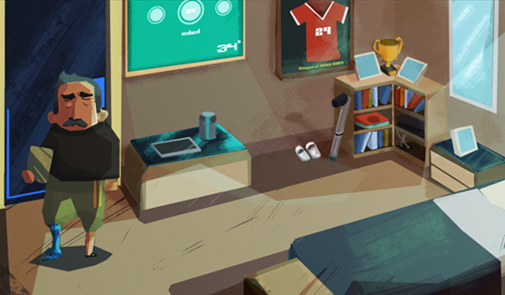
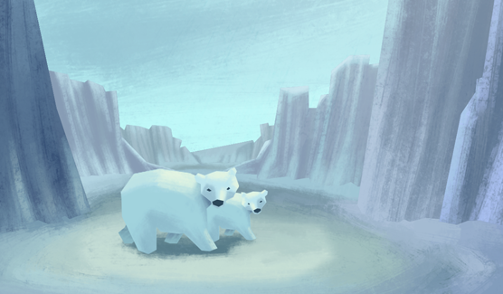

-

Das Umfeld
Our Heritage („Unser Erbe“) spielt in dem Mittelklasse-Wohnhaus einer Großstadt im Jahr 2050. Die Temperaturen sind sehr gestiegen und wegen der globalen Erwärmung unberechenbar. Die meisten Menschen leben in Städten und diese sind erheblich gewachsen.
Wohnhäuser wie das, wo Amy mit ihrer Familie lebt, umfassen eine Vielzahl von Dienstleistungen und Einrichtungen, die den Bewohnern die Unannehmlichkeiten und Gefahren der Außenwelt ersparen sollen.
-

Amy
Amy ist unschuldig, neugierig und abenteuerlustig. Aus ihrer Perspektive geht es unserem Planeten nicht besser oder schlechter als in der Vergangenheit, denn sie hat ihn nie anders gekannt.
Amy liebt es, ihre Umgebung zu erkunden und Neues zu lernen; sie zeichnet gerne Karten, sowohl von erfundenen als auch von realen Orten.
Ihre Abenteuerlust ermöglicht es ihr, Hinweise zu finden und die ihr gestellten Rätsel zu lösen. Während ihrer Recherchen wird sie in Erfahrung bringen, wie die Erde im Jahr 2015 aussah.
-

Spielweise
Lernen Sie mit Amy ihre Umgebung kennen und finden Sie Fotos, mit denen Sie das Puzzle vervollständigen.
Sprechen Sie mit Amys Familie, um hilfreiche Antworten und Hinweisen zu bekommen.
-

Botschaft
Die Vision einer nicht allzu fernen Zukunft, in der die globale Erwärmung zu drastischen Veränderungen geführt hat, führt uns zur Erkenntnis, dass wir heute Maßnahmen ergreifen müssen, um zukünftigen Generationen einen besseren Planeten zu hinterlassen.